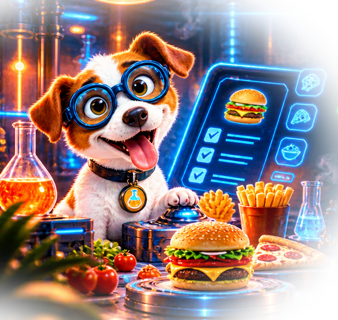
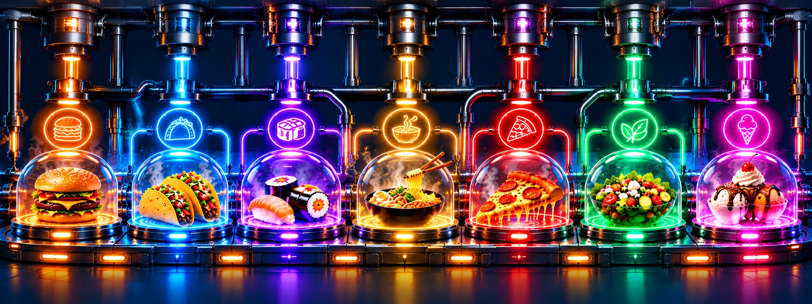

NOT SURE
WHAT TO
EAT?
Answer a few questions, spin the wheel, or let us decide. We've got you.

HOW HANGRY ARE YOU?
PECKISHGETTING
SNACKYHANGRY &
DANGEROUS
 FEED ME
FEED MENOW!CODE RED
EMERGENCY
RUNNING FOOD EXPERIMENTS
HOW IT WORKS
ANSWER QUESTIONS
Tell Byte what you're craving and how hungry you are.
ANALYZE RESULTS
Our food experiment checks your preferences and nearby options.
FIND YOUR MATCH
Explore the restaurants that fit your experiment.
CRISIS AVERTED!
Let Bunsen celebrate while you pick your next meal.
FEATURED CUISINES

Real restaurant listings depend on available OpenStreetMap data. Menus and hours may need confirmation.
Let's diagnose your cravings.
First, tell us where to send the food rescue team.
Not every restaurant listing confirms takeout or delivery. We'll flag unverified information.
What DON'T you want?
Tap foods to eliminate them. Red means excluded.
Time for your food diagnosis.
🍟 Do you want fries tonight?
Fries matching is based on a limited list of known chains, not live menus.
What's the vibe?
Player 1: Your food rules
Make your choices, then pass the phone to Player 2.
🚫 What foods are off limits?
🍟 Fries?
🍽️ Dining vibe?
Player 2: Your turn!
These are your own choices. Player 1's answers stay separate.
🚫 What foods are off limits?
🍟 Fries?
🍽️ Dining vibe?
Your food chemistry
Preparing restaurant search…
Progress follows the search stages. Restaurant servers can take extra time to respond.
Your dinner contenders
🔒 Lock favorites, ✕ remove contenders, or add choices from the full list.
🔬 Contender Control Panel
Eight is the maximum, not the minimum. Remove contenders to spin with just 1, 2, or 3. Shuffle keeps your chosen wheel size. Use Refill to restore eight.
PRESCRIPTION: DINNER!
🤖 BYTE: EXPERIMENT COMPLETE · 🐶 BUNSEN: FINALLY!
Please verify hours, menu, and service options with the restaurant.
We found delicious matches!
Here are the nearby restaurants discovered by Byte and Bunsen.
♡ Your favorite prescriptions
The science of solving hunger.
Hangryology exists for one reason: deciding what to eat shouldn't be the hardest part of your day.
Set your Hangry Meter, rule out what you don't want, answer a few questions, or leave it to the wheel. Find local restaurants and make a decision before hunger wins.
Early version: live restaurant discovery uses public OpenStreetMap data. Opening hours, menu items, delivery availability, and ratings aren't reliably available yet. No account required; favorites are saved on your device.
Experiment interrupted!
Restaurant search is unavailable right now.
Our free restaurant data service sometimes gets busy. You can retry or reduce the search radius.